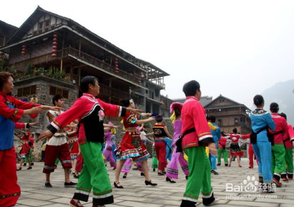

黔江风俗

摆手舞是土家族的传统舞蹈，主要流传在鄂、湘、渝、黔交界的酉水河和乌江流域，以重庆市秀山县、酉阳县、 贵州沿河土家族自治县、湖北恩施自治州的来凤、湖南湘西自治州的龙山、永顺为主要传承地，共有四节。现恩施土家族苗族自治州有改编的新版摆手舞，更易于学习和传承。
摆手舞它分大摆手和小摆手两种。小摆手，土家语叫“Sevbax（舍巴）”或“Sevbaxbax（舍巴巴）”；大摆手， 土家语称为Yevtixhhex（叶梯黑）。它集舞蹈艺术与体育健身于一体，有“东方迪斯科”之称。
摆手舞反映土家人的生产生活。如狩猎舞表现狩猎活动和摹拟禽兽活动姿态。包括“赶猴子”、“拖野鸡尾巴”、 “犀牛望月”、“磨鹰闪翅”、“跳蛤蟆”等十多个动作。列中国首批国家级非物质文化遗产名录。

赶场，又叫赶集，是黔江一种特色民族风俗。赶场通常是村镇周围的人们在约定的每周某日进行集体货品、蔬菜买卖的交易活动。
在赶场日，人们在选购生活必需品的同时也会买些特色农村食品。在黔江，赶场日是每隔4天举行一次。